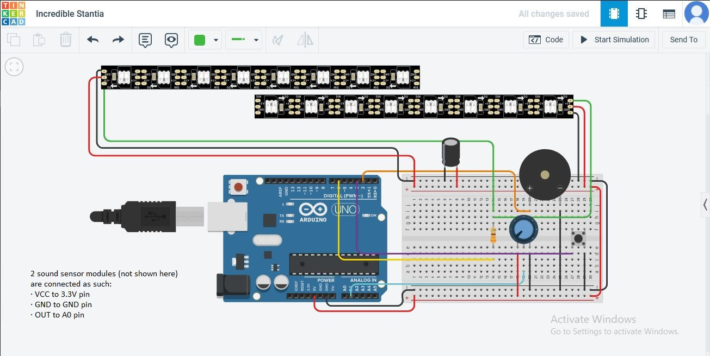
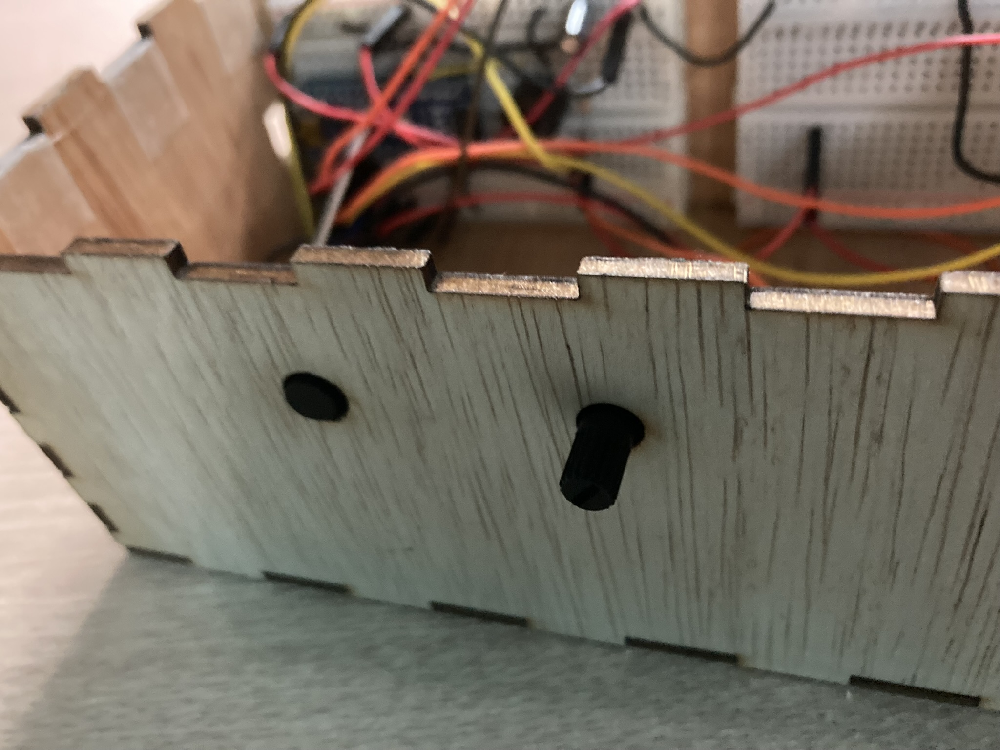

Projects
Musical Reactive Light Box
A multicolour lighting display using neopixels that react to music with random colours in 4 switchable modes.
Features
1. It has 4 modes of lighting display, all utilising a pair of sound sensors to detect variation in music amplitude. The modes are selected by pressing a push button that cycles through the different modes until it goes back to the first one. The 4 modes are:
| Mode 1 [default]: | sound sensitivity [light blinks/changes color when mid-volume sound is detected |
| Mode 2: | Low sound sensitivity (light only blinks/changes color when a relatively louder sound is detected, i.e. the significant parts of a song |
| Mode 3: | Dimming light mode (light dies down when sound is detected and lits back up in a sine wave-like fashion altogether when sound trails off) |
| Mode 4: | lightning flash mode (light stays off but flashes on when loud sound is detected) |
2. The brightness of the neopixels can be adjusted by turning the knob of a potentiometer
Fabrication Methods Used
| Technique | Makes |
|---|---|
| CAD design | Box, component holders, graphic for light display |
| Laser cutting | Box, light display sheet |
| 3D printing | Component holders |
| Processing system | Arduino Nano V3 CH470 |
| Input devices | Slide switch, push button, potentiometer, sound sensors |
| Output devices | Buzzer, neopixel strips |
| Power | Single 5V DC plug, 1.5V AA batteries |
Bill of Materials
| Sn | Qty | Description | Cost |
|---|---|---|---|
| 1 | 1 | Arduino Nano | $14.50 |
| 2 | 2 | CZN-15E sound sensor module | $6.90 |
| 3 | 1 | WS2812B NeoPixel strip (50m) | $59.90 |
| 4 | 1 | Piezoelectric speaker | $2.00 |
| 5 | 1 | Push button | $0.70 |
| 6 | 1 | Slide switch | $0.80 |
| 7 | 1 | Potentiometer | $1.00 |
| 8 | 1 | 330 ohms resistor | $0.05 |
| 9 | 1 | 1 microFarad capacitor | $0.60 |
| 10 | 1 | AA battery holder | $3.00 |
| 11 | 1 | 4 pcs AA battery pack | $1.60 |
| 12 | 2 | Breadboard | $5.00 |
| 13 | 1 | 40 pin 40 way M/M connector rainbow jumper cable wires (10cm) | $5.50 |
| 14 | 1 | 40 pin 40 way M/F connector rainbow jumper cable wires (10cm) | $5.50 |
| 15 | 1 | 3mm thick 30 x 50 mm clear acrylic sheet | $15.00 |
| 16 | 1 | 3mm thick A3 plywood | $10.00 |
Ideas and References
Having seen some arduino-based sound reactive led strips, I wanted to make one as my first Arduino project. The following Youtube link is to the video that I referred to during the course of my project: https://youtu.be/NeTVxjG42tk. There are many videos out there related to lighting LED strips using sound sensor inputs, but this video is the one that I found most relevant to my idea and project scale. It is a rather simple project with minimal features but fulfilling in terms of my objective for this small project. Besides the fact that components supply is limited and challenging to get, time constraint was another reason why my project could not expand in terms of features and aesthetics.
For the design of my project, I took the concept idea from a former student's EP1000 project which was a mood lamp.

{kind=link}
Initial sketch
This is a sketch of the prototype at the beginning of the project.
{kind=link}
CAD design
Below is the Fusion360 model of the box that houses all components including the lighting display. It will be fabricated by laser cutting and 3d-printing combined.
Breakdown of the box model:
1. A rectangle of length = 320mm and width = 108mm is sketched and extruded to a height of 3mm (desired plywood thickness).
2. Tabs are created by first sketching 2 small rectangle on the surface of the plank's length.
The length of both rectangles are the same and dimensioned by using the formula: length tab = length / ( ( number of tabs along length * 2 ) + 1 ).
3. The 2nd rectangle is cut-extruded inwards and a tab is formed. The tab is duplicated along the plank's length by using the rectangular pattern command.
The formula for rectangular pattern distance is length - ( Length of tab * 3 ).

4. Next, The back side of the box is created by first sketching a rectangle on that plane and extruding it inwards to a distance of 3mm.

5. To split the two solids into individual body parts, the combine tool is used to split them by using cut mode.

6. Tabs are created along the plank's width by repeating steps 2 & 3 but the formulae for the width tab and rectangular pattern distance are different. Width tab = width / ( ( number of tabs along width * 2 ) + 1 ), rectangular pattern distance = width - ( Length of tab * 3 )


7. For the tabs along the height of the box, tab = height / ( ( number of tabs along height * 2 ) + 1 ), rectangular pattern distance = height - ( Length of tab * 3 ).


8. Next, the 3 parts (length, width, height) are mirrored one by one to form a complete rectangular box. Mirror planes are created by constructing planes.

9. A 270 x 3mm slot is created on the top of the box to accomodate the 3mm thick acrylic sheet for light display.
{kind=link}
10. There will be two identical low walls on the floor of the box for positioning the NeoPixel strip in place. A plane is first constructed right at the middle and a sketch is created. After extruding the low wall, it is mirrored 10 mm away from itself and now there is a suporting structure created for the NeoPixel strip.
{kind=link}
{kind=link}
11. A sketch is created on the side view of the box and extruded to create a holder for the light display.
{kind=link}
{kind=link}
12. The holder is further modified to make it fit to the NeoPixel holder on the floor of the box and to support the acrylic sheet for light display.
{kind=link}
{kind=link}
13. A hole is created on the left side of the box for accessing the USB mini-b input port of Arduino Nano. 2 holes are created on the front of the box to accomodate a push button and potentiometer. One hole is created on the back of the box for the slide switch. 2 identical circular holes are created on the left and right sides of top of the box for the microphones of 2 sound sensor modules.
{kind=link}
{kind=link}
{kind=link}
{kind=link}
14. The box is completed and ready to be exported to respective files for laser cutting and 3D-printing.
{kind=link}
Aside from the box, some holder parts for electronic components were modelled for 3D-printing.
Preparing the box drawings for laser cutting:
The Fusion360 model is converted into a dxf drawing file to be prepared for laser cutting. In Fusion360, every of the individual parts are projected as a sketch and saved as a DXF file.
The DXF files are imported into Inkscape and arranged.
{kind=link}
The lineweight of every line is made to be hairline and their colour is red. It is done in the Fill and Stroke tab.

I wanted to engrave the handwritten words 'Yaoliu' on the front of the box so I opened Photoshop on iPad and wrote the words using an Apple Pencil. The writing is exported as a transparent png file and I imported it into Inkscape. It is scaled to a desired size and positioned on the lower right corner of the front wall to be laser cut.
{kind=link}

Preparing the light display design for laser cutting:
I wanted to create something resembling hard dance music so I took an image of a hard dance music festival mainstage backdrop from google:

Using the Bezier tool, the profile outline of the the image was drawn to be vector cut later.
{kind=link}
The original image was then converted to grayscale using Photoshop and imported to Inkscape so that the details could be engraved.
{kind=link}
Using the 'Trace Bitmap' tab in Inkscape, the raster image was applied a 'brightness cutoff' detection mode to filter out minute details and simplify the entire image to contain lesser details. This image optimisation will minimise laser cut time and reduce the risk of the acrylic catching fire while being cut. The image details are converted to vector automatically. The fill is changed to RGB green colour for engraving.
{kind=link}
The drawing is exported to an SVG file and is ready to be laser cut.
Fabrication
3D-printing:
The light display holder and electronic component holders are exported as STL files and sliced with Ultimaker Cura. A larger layer height of 0.3mm was set to reduce print time.
{kind=link}
{kind=link}
The Prusa i3 Mk3 3D-printer in SP Makerspace was used to print the parts. Because the light display holder could take up to 5 hours to print and I started printing at 1pm, the print could not be completed by the time Makerspace had to close. I decided to stop the printing at 72% and call it done since the unfnished print could nonetheless serve its purpose of supporting the acrylic light display sheet. It was a Friday and I couldn't afford to wait till Monday to be back and take the finished print.
{kind=link}

Laser-cutting:
The light display design SVG file is imported to CorelDraw to be laser-cut using the Universal laser-cutter in SP Makerspace.
When the SVG file exported from Inkscape was imported to CorelDraw, it was messed up because the strokes went all over the place and I tried my best to put things back into place. Some of the engraved details could not be fixed and they look off.
But I started the laser-cutting anyway because I did not know how to fix the drawing, nor do I know how to prevent Inkscape SVG from messing up when imported to CorelDraw. Nonetheless, the final result looks okay.
Next, the box layout SVG file is imported to CorelDraw and laser-cut using the FuisonPro laser-cutter in SP Fablab@T11.
{kind=link}
{kind=link}
{kind=link}
{kind=link}
Integration
Testing of the CZN-15E sound sensor module:
(Music: Audiotricz, Ecstatic, MERYLL - You)
The green light indicator lights up whenever sound is detected.
Testing of project idea with a simple red LED:
(Music: D-Sturb - Fire & Blood)
The LED lights up whenever a loud sound is detected.
Testing the NeoPixel strips to light up and change with music:
(Music: Siks - Maybe you)
Push button is added and mode-switching is tested.
Final code is done and a demonstration of the fully assembled prototype:
(Music: Dimitri Vegas & Like Mike - Project T (Martin Garrix Remix))
Assembly is covered in the next section below.
This is the schematic of the musical reactive light box.

The prototype uses the Arduino Nano microcontroller to run a program instead of Arduino Uno as shown in the schematic. Both boards will work the same anyway. It works by converting averagely loud sounds such as music beats and chord changes into an analog signal. That signal will be an input for the NeoPixel strips to light up.
Depending on the sensitivity adjustments in the code, the lighting display will vary.
The 2 NeoPixel strips will light up together identically as they both receive data from the same digital pin 6.
A 1mF capacitor is connected across the NeoPixel strips +ve and -ve connections as a good practice to avoid any hazardous circuit breakdown. A 330 ohms resistor is connected to the NeoPixel strips' DATA_IN, also for safety.
2 sound sensors are used instead of one for better sound sensitivity and consistency of the lighting display. The sound sensors' OUT pins are connected to the A0 analog pin of Nano, VCC to 3.3V pin and GND to ground pin.
The push button is for mode switching. The potentiometer is for brightness adjustment. A buzzer is connected to digital pin 2 to play a startup melody everytime the Arduino is powered up.
Here is the Arduino code:
{kind=link}
Assembling the musical reactive light box:
{kind=link}
The NeoPixel strips are placed between the pair of long wood parts to hold them in place.
{kind=link}

{kind=link}
{kind=link}
{kind=link}
{kind=link}
{kind=link}

{kind=link}

{kind=link}
{kind=link}
{kind=link}
The circuit is built as shown. The 3d-printed holders in grey are glued to the plywood, keeping the electronic components in place.
The 2 sound sensor modules are attached to the ceiling of the box, with the microphone sticking out through 2 holes which can be seen externally.
The long wirings are taped to the floor or inside walls of the box so that they don't get shifted and move out of place which could then make the circuit fail to function.
{kind=link}
{kind=link}
{kind=link}
The 3d-printed light display holder is attached to the NeoPixel holder set fastened to the box floor.
{kind=link}
The circuit is completed as shown.
{kind=link}
{kind=link}
The assembly is done.